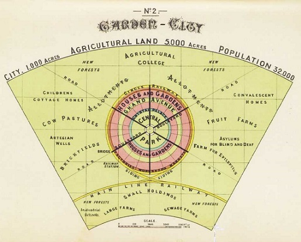

La cartografía ha sido una herramienta esencial para entender, organizar y planificar el espacio humano desde las primeras civilizaciones. A lo largo de la historia, su relación con la planificación urbana y el desarrollo ha evolucionado significativamente, reflejando los avances tecnológicos, científicos y culturales de cada época. A continuación, se presentan los principales hitos históricos de esta relación.
Primeras Representaciones Espaciales (Prehistoria y Antigüedad)
- Evidencia más temprana: Las primeras representaciones cartográficas fueron grabados y dibujos rudimentarios en piedra, arcilla o pieles. Estas representaciones, aunque simples, servían para identificar recursos como agua, rutas de caza o territorios.
El mapa de Çatalhöyük (Turquía, 6200 a.C.), uno de los mapas urbanos más antiguos, muestra la distribución de viviendas y un volcán cercano.
- Egipto y Mesopotamia: Las civilizaciones del Nilo y el Tigris-Éufrates utilizaban mapas para la administración del territorio, incluyendo la distribución de cultivos y la construcción de canales de riego.
- Grecia y Roma: Los griegos desarrollaron métodos más precisos para representar el espacio, incorporando conceptos matemáticos como la geometría. Roma utilizó mapas para planificar su vasto imperio, incluyendo ciudades, carreteras y acueductos.
El Mapa de Peutinger, una representación de las vías romanas, muestra cómo la cartografía era clave para gestionar el desarrollo urbano y la movilidad.
Cartografía Medieval y su Relación con las Ciudades (Siglos V-XV)
- Mapas simbólicos y religiosos: Durante la Edad Media, los mapas se centraron en representar conceptos más que espacios precisos, como el Mapa T en O de la Cristiandad. Sin embargo, las ciudades medievales comenzaron a producir mapas específicos para gestionar su desarrollo.
- Crecimiento urbano en la Edad Media tardía: La expansión de las ciudades debido al comercio y la población impulsó la necesidad de mapas para planificar mercados, murallas y sistemas de alcantarillado.
El Renacimiento y el Nacimiento de la Cartografía Científica (Siglos XV-XVII)
- Avances tecnológicos y artísticos: La invención de la imprenta y el uso de la perspectiva en el arte transformaron la cartografía en una ciencia más precisa. Esto permitió planificar ciudades con mayor detalle.
Ejemplo: Leonardo da Vinci realizó bocetos de ciudades con sistemas hidráulicos para optimizar la distribución del agua.
- Diseño de ciudades ideales: Con el auge del urbanismo renacentista, la cartografía fue esencial para diseñar ciudades "perfectas" basadas en simetría y funcionalidad.
Ejemplo: Los diseños de ciudades fortificadas de Francesco di Giorgio Martini.
- Expansión colonial: Durante este periodo, los mapas también se usaron para planificar asentamientos en las colonias, con una clara influencia en el desarrollo urbano de ciudades en América, Asia y África.
Cartografía en la Era Industrial y el Urbanismo Moderno (Siglos XVIII-XIX)
- Revolución científica y cartografía temática: Durante este periodo, los mapas comenzaron a incorporar datos específicos como población, densidad y recursos naturales, esenciales para planificar ciudades en expansión.
Ejemplo: El mapa de John Snow (1854) en Londres identificó un brote de cólera y llevó al desarrollo de sistemas de agua potable más seguros.
- Urbanismo y planificación moderna: El crecimiento de las ciudades industriales planteó retos como la vivienda, el transporte y la higiene, impulsando la creación de mapas detallados.
Ejemplo: Los mapas de París bajo el plan de Haussmann, que transformaron la ciudad con amplias avenidas y espacios públicos.
- Primeros catastros modernos: Los mapas catastrales detallados permitieron organizar mejor el uso del suelo urbano y la distribución de propiedades.
La Revolución Cartográfica en el Siglo XX
- Planificación urbana formalizada: Con el auge del urbanismo como disciplina, los mapas se convirtieron en herramientas indispensables para diseñar ciudades más funcionales y sostenibles.
Ejemplo: Los planos de Ebenezer Howard para las ciudades jardín, que buscaban integrar zonas urbanas con espacios verdes.
- Fotogrametría y teledetección: El desarrollo de la aviación permitió capturar imágenes aéreas y generar mapas más precisos. Esto revolucionó la planificación de ciudades al brindar una visión completa del territorio.
- Cartografía temática moderna: En este periodo, se popularizó la representación de datos sociales, económicos y ambientales en mapas, lo que permitió planificar mejor las ciudades según las necesidades de la población.
Ejemplo: Mapas de segregación racial en ciudades estadounidenses como Chicago.
La Era Digital y el Siglo XXI
- Cartografía digital: El auge informático ha transformado la forma de crear y usar mapas, dando lugar a los Sistemas de Información Geográfica (SIG). Estas herramientas permiten analizar grandes volúmenes de datos y superponer múltiples capas de información.
- Teledetección y satélites: Los avances en teledetección proporcionan datos en tiempo real sobre el crecimiento urbano, el cambio climático y la movilidad.
- Ciudades inteligentes: Hoy en día, los mapas digitales se integran con sensores IoT (Internet de las Cosas) para gestionar tráfico, iluminación y recursos de manera eficiente.

Fuente: El navegador de Mercator
Fuente: Österreichische Nationalbibliothek, Wien, 324
Las tierras emergidas y el océano que las rodea tienen forma circular, la «O», mientras que los mares que las dividen forman una «T» inscrita.
Fuente: Foundations of Western European Cartography in Texas Collections.
Desagües subterráneos del Imperio Romano
Fuente: iagua
Rocca di Sassofeltrio (1478-1486)
Fuente: http://www.fortificazioni.net/
Fuente: Sacyr

Fuente: The guardian

La ciudad y su entorno (32.000 habitantes para unas 2.000 hectáreas)
Fuente: https://urban-networks.blogspot.com/
Fuente: GEOBIOMBO
Fuente: Uchicago Library